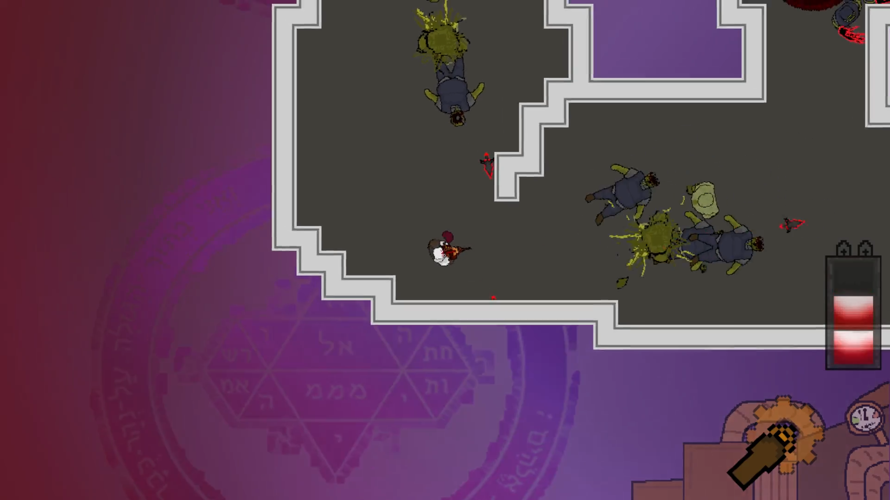

Leviathans Crank is a short Hotline Miami clone about using one gun and having to crank it to reload
You can play on Itch
I originally made this game for the BIGMODE game jam of 2025 with a Theme of "POWER" with my friend Anonymous Contributor. It was one of my first games I ever released, and I was so embarrassed by how it turned out I took it down shortly after the Jam. Wanting my itch page to be a little more filled out I've come back to it and redone a lot of aspects to be less terrible. The Crank mechanic works much much better now as intended and there's a few more places of polish throughout that the original game could never dream of because I sucked so much ass at making games
There's lots of design issues I had to hold myself back from fixing. I was trying to copy Hotline Miami but with one gun that slows down combat, has three shots, and makes the player do the same "mini-game" to reload. I had wanted to create a slight strategic element to the game in the same way you had in Hotline Miami when you're standing outside a room and planning how you're going to kill everyone in it. Exploding enemies were the only space I really did this as they let you kill many with one bullet. Other than that the game doesn't offer you the chance to think about what's happening. You just have to walk into a room and deal with the enemies very slowly by leading them around a corner. It would have helped if I also let you move your camera like Hotline does as that adds a lot to you getting to plan how you'll go through a room
As much as a part of me wants to go back and fix the issues I just described I think the most value I get from this project is fixing it up and letting you all see it. I would much rather carry this game mechanic into a survival horror game instead of forcing it to work in a fast-paced arcade game. I doubt that will manifest as another Hotline Miami clone...
